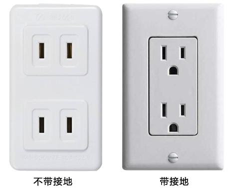

-
天氣
台灣四季中以春天和冬天的變化較大，夏天和秋天變化較小，年平均溫度約22度，最高月份平均氣溫達27-28度，而最低月平均氣溫約15-16度。台灣只有在少數的高山地區才可以看到雪花飄飄的景象。
-
電壓與插頭

臺灣一般家庭照明及小型器具之電壓為110V或220V，頻率為60Hz。如有從國外攜進之電器用品，必須先確認電壓、頻率是否適用。
臺灣最常用的是2片扁腳的插頭，與日本、美國、加拿大相若。除2腳扁腳插外，臺灣還有三腳的插頭，一般來說是電腦或家電使用。 -
交通台灣公共交通工具台灣擁有完善的交通配套，高鐵連接台北、台中、高雄等主要城市，是最快捷的交通工具。火車和國道客運價格較經濟，可到達較偏遠的地區，適合悠閒旅行的旅客。
另外，在台北和高雄坐捷運可以帶大家到主要的景點，就像香港的港鐵那麼方便。巴士台灣好行是專門為觀光景點的旅遊規劃設計的巴士服務，從景點所在地附近的台鐵或高鐵站接送旅客前往景點，適合背包旅遊，不想開車的旅客，同時響應節能減碳的旅遊新潮流。高鐵台灣在在臺灣西部走廊設置11個高鐵車站，分別是台北、板橋、桃園、新竹、苗栗、臺中、彰化、雲林、嘉義、臺南和左營。以最高時速300公里之營運速度來回穿梭於台灣西部走廊中。如果你打算環台遊的話，坐高鐵能省下不少交通時間。台鐵台灣鐵路，一般稱之爲「台鐵」。
台鐵售票分爲劃位列車 (即「對號列車」) 與非劃位列車 (即「非對號列車」)。劃位列車包括普悠瑪列車、太魯閣列車、自强號列車、莒光號列車和復興號列車；非劃位列車包括區間、區間快車和普通快車。劃位列車停站數量較少，前往宜蘭、花蓮、台東等地區旅遊時候，旅客可選擇搭乘劃位列車，即省時又方便。 -
溫泉注意事項
入溫泉浴池之前最好稍作休息，讓身體平靜下來再入浴更合適。
入池時盡量避開高溫的溫泉出水口； 依皮膚承受力，水溫38- 42℃最適中，最高不可超過45℃，以免燙傷。
泡湯時間長短視溫泉的溫度而定，如果汗流浹背或是心跳急速加速，可先休息10分鐘左右，看情況再決定是否繼續第二回合泡湯。
一次浸泡15分鐘為宜，如果流汗太多或是心跳很快表示您泡過頭了。
入浴前後多補充水分，以保持體內水份平衡。 銀髮泡湯族建議應結伴泡溫泉。
入浴後，不要喝咖啡、濃茶或抽煙、喝酒等增加刺激的行為，以延長並增進溫泉浴保健效果。